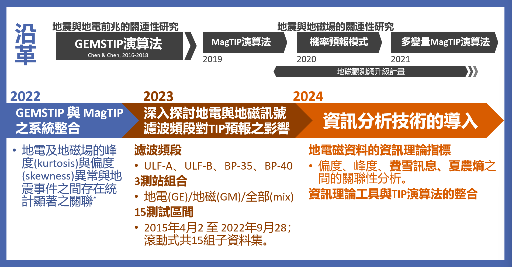
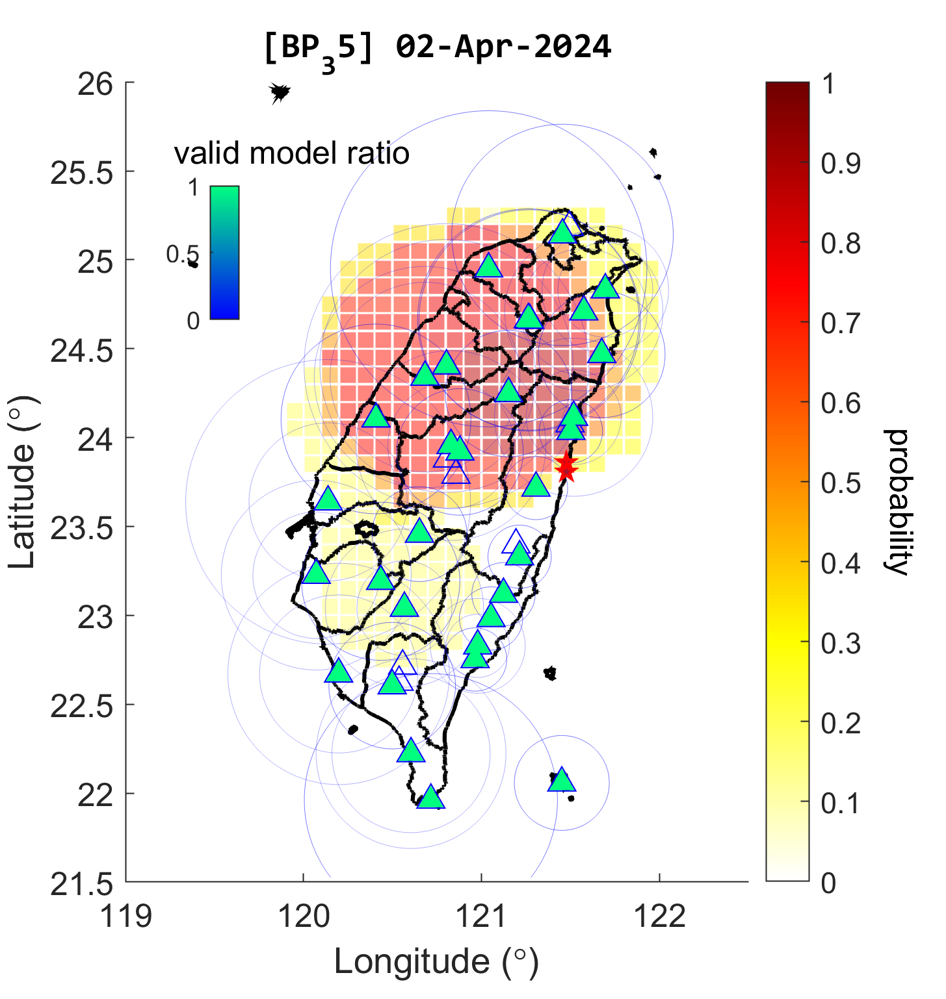

GEMS-MagTIP
The documentation of GEMS-MagTIP: https://cgrg-lab.github.io/GEMS-MagTIP/
簡介
GEMS-MagTIP 是一個整合演算法，根據地電與地磁場資料計算地震發生機率增加的時間（TIP, Time of Increased Probability）。這套系統結合了先前 GEMSTIP（地電監測系統的TIP）與 MagTIP 的方法學，發展出一個支持多元資料來源的多變量框架。

發展歷史
GEMSTIP（地電監測系統的TIP）專注於地電場異常的觀測，開啟了此系統的發展。GEMSTIP 使用預測建模、二元分類以及統計分析來辨識地電資料中的地震前兆。系統顯示地電異常與地震事件之間有顯著相關性，並成功建立了地震機率預測的可行性。
在 GEMSTIP 的基礎上，MagTIP 擴展了演算法以納入地磁場資料。MagTIP 大幅提升了計算效率，支持全磁場與三分量磁場數據，並引入滾動預測系統。MagTIP 的進展使其能整合現代與傳統儀器的資料，確保珍貴的歷史記錄得以保存與利用。

GEMS-MagTIP：統一且多變量
現今的 GEMS-MagTIP 系統整合了 GEMSTIP 和 MagTIP 的功能，實現地電與地磁資料的同步使用。此多變量系統支持多種類型的地電磁資料，包括三分量與單分量訊號，並用於計算地震發生機率增加的時間（TIP）的統計指標（例如偏度、峰度、費雪訊息和夏農熵）。
GEMS-MagTIP 系統代表了地震前兆研究的進一步發展。它提供了一個強大且靈活的工具，用於識別與大型地震事件相關的地電磁異常，並基於 TIP 概念實現聯合測站的地震機率預測。

